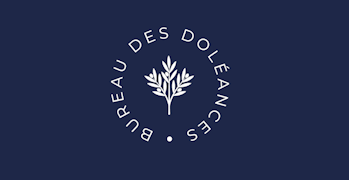

Le Bureau des doléances est un dispositif numérique et physique qui permet à chacun d'exprimer par écrit ses préoccupations, interrogations ou constats, sous forme de lettres individuelles. Il offre un espace accessible, respectueux et anonyme, sans intervention sur le contenu des contributions. Celles-ci ne visent pas le débat mais la mise en partage d'expériences. Les textes peuvent ensuite être transmis, archivés ou valorisés. Le dispositif se situe à la croisée de l'expression citoyenne et de la démarche artistique.
Toutes les lettres archivées sont à retrouver à l'adresse : https://bureau-des-doleances.fr/archive
À ce jour, nous classifions les doléances en trois catégories : ce qui vient, où vous écrivez ce que vous imaginez, espérez ou redoutez pour l'avenir, qu'il soit proche ou lointain ; ce qui nous fracture, où vous exprimez ce qui vous divise, vous révolte ou vous blesse dans le monde, qu'il s'agisse de conflits, de tensions ou d'injustices ; et ce qui déborde, où vous déposez ce qui ne trouve pas sa place ailleurs, une pensée, une émotion ou un trop-plein.
Le Bureau des doléances met à disposition un espace de dépôt numérique permettant de formuler une lettre à distance. Les contributions peuvent être anonymes. Aucun nom, justification ou information personnelle n'est requis pour déposer une lettre.
Le Bureau assure un cadre de réception respectueux. Les textes sont recueillis sans modification ni intervention sur leur contenu. Ils ne font pas l'objet de réponse individuelle.
En plus de l'archivage en ligne, Les lettres déposées peuvent, avec l'accord de leur auteur, faire l'objet de différentes formes de transmission :
- envoi à des institutions, associations ou médias
- valorisation artistique ou éditoriale (lecture publique, publication, installation)
Le dépôt en ligne prolonge le dispositif présent dans l'espace public. Il en conserve les principes : accueillir une parole, lui offrir une forme, et permettre qu'elle soit partagée.
Les lettres sont à envoyer à l'adresse : lettre@bureau-des-doleances.fr